Halo, Detektif Muda! 👋
Minggu lalu kamu sudah kenalan sama tree (pohon) dan graph (jejaring). Hari ini kita naik level: bukan cuma mengenali, tapi juga membuktikan pakai angka dan logika, seperti detektif beneran.
Misi hari ini
- Bedah anatomi tree: level, tinggi, derajat, subtree.
- Bedah anatomi graph: berarah, berbobot, derajat, siklus.
- Pakai Tiga Uji Tree untuk menyidangkan 6 berkas kasus.
- Ambil Tantangan Bintang ⭐
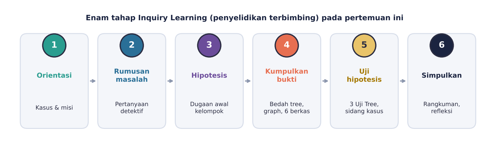
Ingat Lagi: Tree dan Graph
| TREE (pohon) | GRAPH (jejaring) | |
|---|---|---|
| Bentuk | Bercabang ke bawah, ada root di atas | Jejaring bebas, bisa melingkar |
| Induk | Setiap simpul (kecuali root) punya SATU induk | Satu simpul bisa punya banyak koneksi |
| Putaran | Tidak boleh ada jalur berputar | Boleh ada jalur berputar (siklus) |
| Contoh | Silsilah, folder, struktur organisasi | Pertemanan medsos, peta jalan, rute kapal |
Bedah Tree Lebih Dalam 🌳
Kita pakai satu contoh biar fokus: folder proyek di laptop.
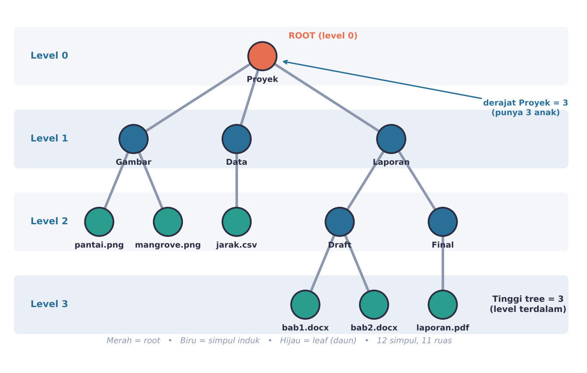
Level, tinggi, derajat
Jarak (jumlah ruas) dari root. Root ada di level 0. “bab2.docx” di level 3.
Level paling dalam. Tree folder ini tingginya 3.
Jumlah anak sebuah simpul. “Proyek” = 3, “Laporan” = 2, leaf = 0.
“Keluarga” simpul
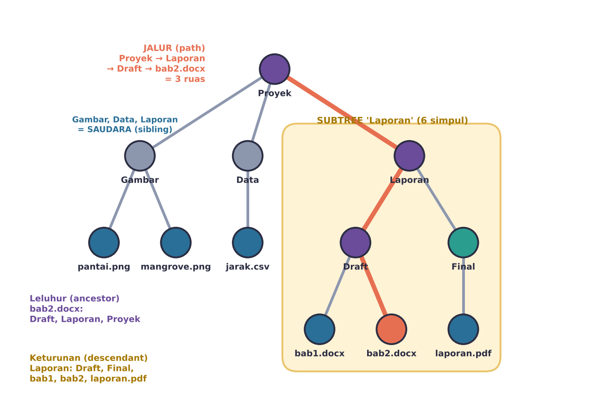
C:\Proyek\Laporan\Draft\bab2.docx.Rahasia jumlah ruas tree
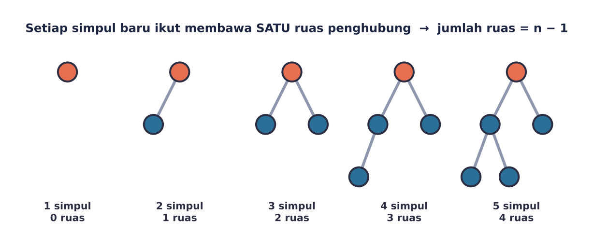
✏️ Coba dulu: tree 20 simpul punya berapa ruas?
19 ruas (20 − 1).
✏️ Coba dulu: berapa simpul di subtree “Final”?
2 simpul: Final dan laporan.pdf.
⭐ Bonus: pohon biner
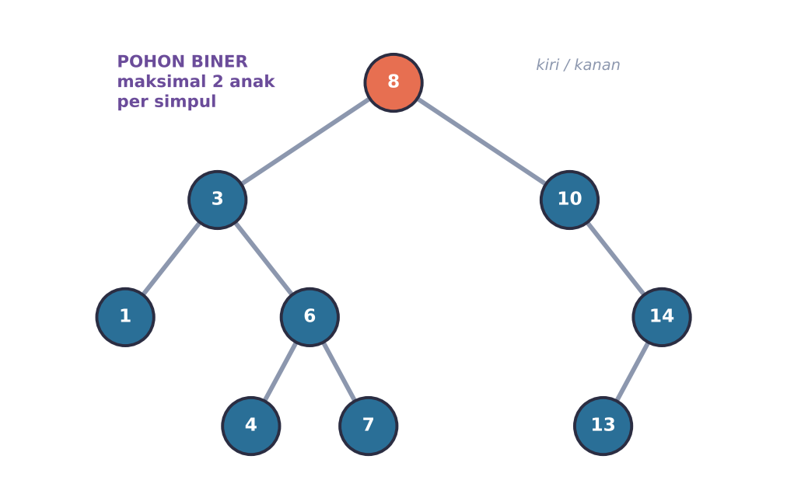
Pohon biner dipakai untuk mencari dan mengurutkan data dengan cepat. Tree “Proyek” bukan pohon biner karena ada simpul beranak 3.
Bedah Graph Lebih Dalam 🕸️
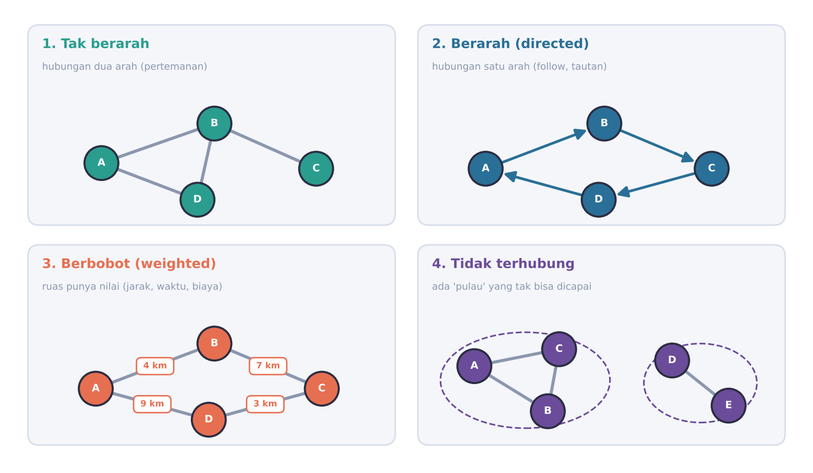
- Tak berarah: hubungan dua arah.
- Berarah: hubungan satu arah, digambar dengan panah (follow, tautan web).
- Berbobot: ruas punya angka (jarak, waktu, biaya).
- Tidak terhubung: ada “pulau” yang tidak bisa dicapai.
Derajat simpul
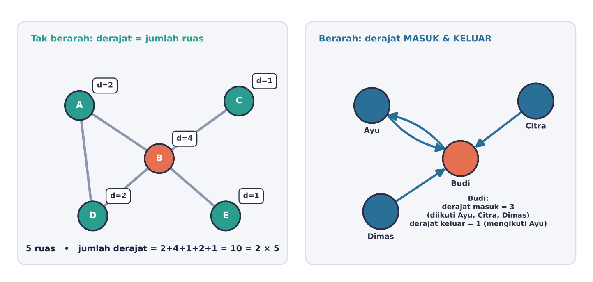
Peta wisata Tarakan
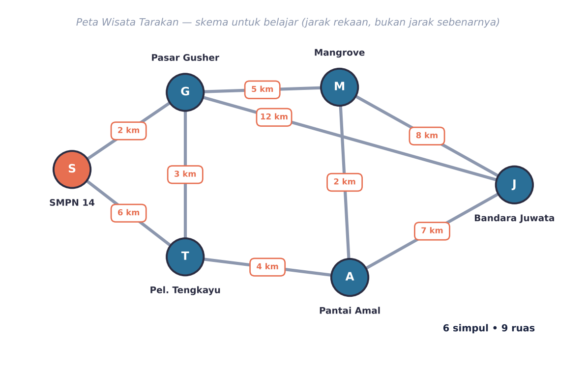
- 6 simpul, 9 ruas. Jumlah derajat = 2+4+3+3+3+3 = 18 = 2 × 9 ✅
- Jalur S–G–J = 2 + 12 = 14 km.
- Siklus: S–G–T–S. Karena ada siklus, peta ini bukan tree.
- Terhubung: dari mana pun bisa sampai ke mana pun.
✏️ Coba dulu: derajat 3, 3, 2, 2, 2 → berapa ruas?
Jumlah derajat 12, jadi ruas = 6.
Tree itu Graph Spesial
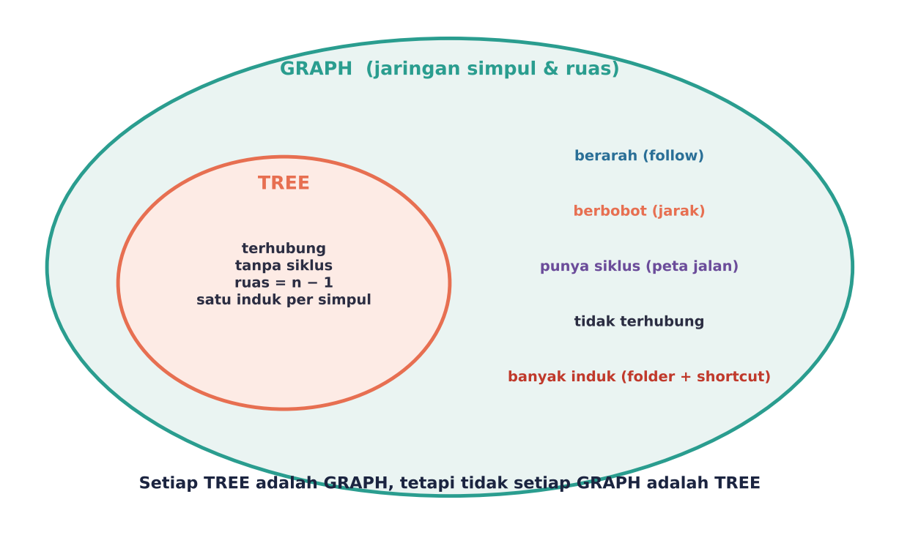
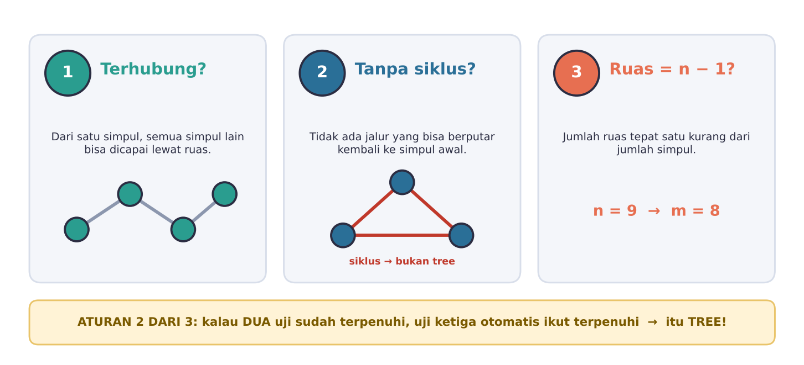
🔧 Mesin Uji Tree
Masukkan data sebuah struktur lalu lihat putusannya.
Enam Berkas Kasus 🔍
Hitung n dan m, cek terhubung dan siklus, lalu pilih putusanmu.
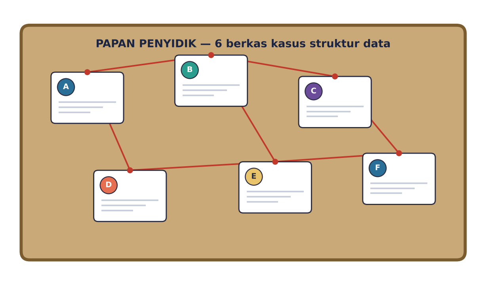
Tantangan Bintang ⭐
Peta wisata punya 6 simpul dan 9 ruas. Agar jadi tree, hapus berapa ruas?
Tree 6 simpul punya 5 ruas, jadi 9 − 5 = 4 ruas harus dihapus. Hapus ruas yang berada di dalam siklus, bukan ruas “jembatan” yang membuat tempat terputus.
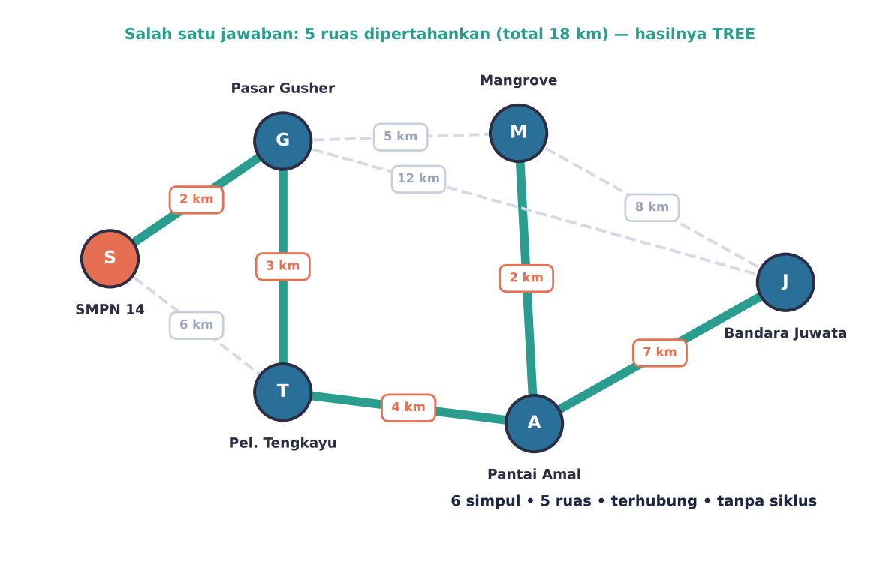
KUDA: Kuis Dadakan 🎯
Enam soal singkat. Jawab dulu, baru lihat pembahasan.
Yang Perlu Kamu Ingat
| Topik | Intinya |
|---|---|
| Level, tinggi, derajat | Level = jarak dari root (root = 0); tinggi = level terdalam; derajat = jumlah anak. |
| Subtree dan jalur | Subtree = simpul + keturunannya. Jalur = urutan simpul lewat ruas. |
| Ruas tree | n simpul → n − 1 ruas. |
| Jenis graph | Tak berarah, berarah, berbobot, tidak terhubung. |
| Derajat graph | Jumlah derajat = 2 × jumlah ruas. |
| Tiga Uji Tree | Terhubung, tanpa siklus, ruas = n − 1 (2 dari 3). |
| Hubungan | Setiap tree adalah graph, tetapi tidak setiap graph adalah tree. |
Latihan mandiri
Istilah Penting
| Istilah | Artinya |
|---|---|
| Simpul (node) | Titik data |
| Ruas (edge) | Garis penghubung dua simpul |
| Root / leaf | Simpul paling atas / simpul tanpa anak |
| Level | Jarak (jumlah ruas) dari root |
| Tinggi | Level terdalam pada tree |
| Derajat | Jumlah ruas yang menempel pada simpul |
| Subtree | Simpul beserta semua keturunannya |
| Siklus | Jalur yang kembali ke simpul awal |
| Terhubung | Semua simpul bisa saling dicapai |
| Graph berarah | Ruas berupa panah (satu arah) |
| Bobot | Angka pada ruas |